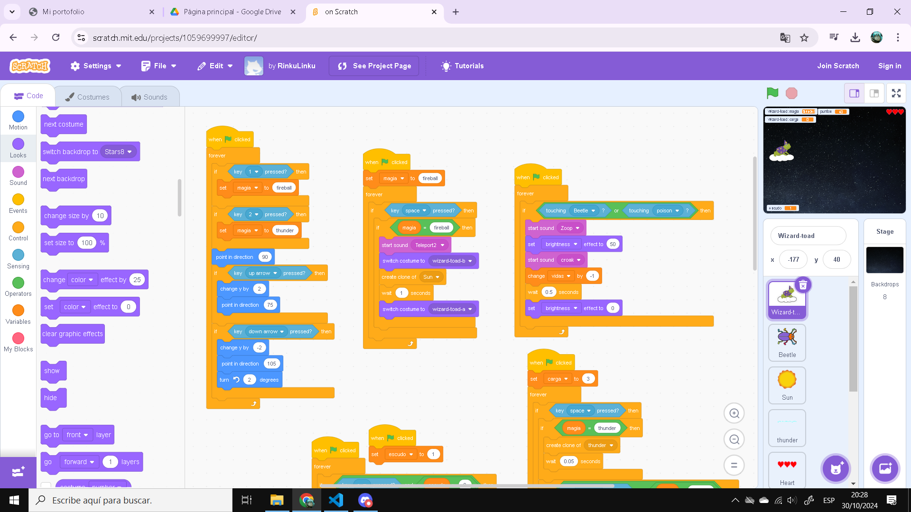
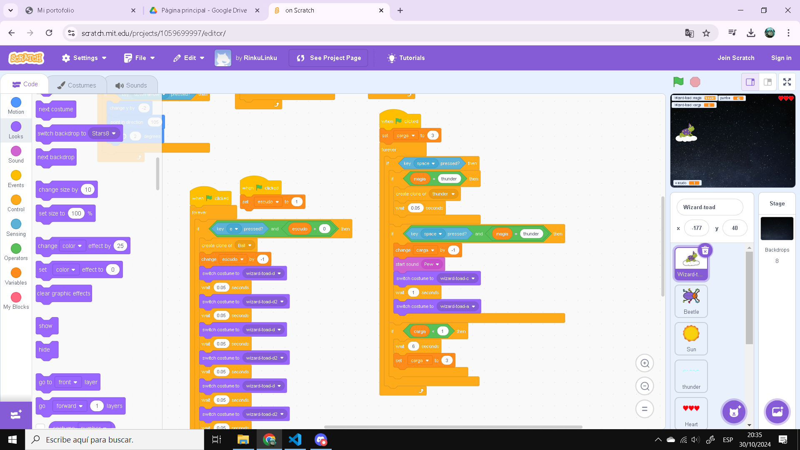
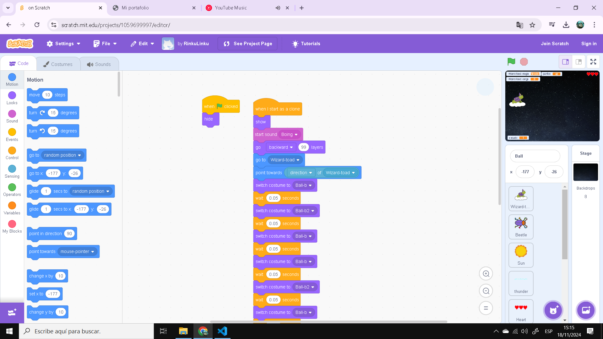
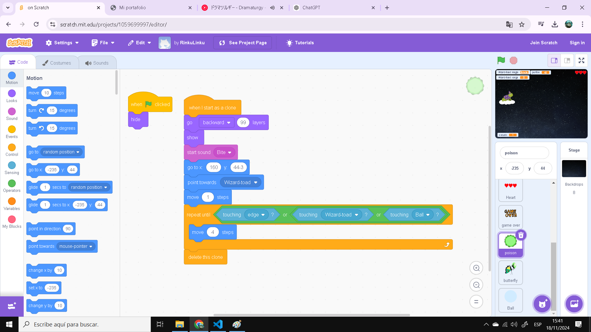

Wizard Toad: Script.
Magia, Movimiento, Vida y Escudo.
Magia y Movimiento.
El primer script controla el cambio de magia del jugador. Al presionar las teclas "1" y "2", la magia cambia entre bolas de fuego y rayos. En esta misma sección, se controla el movimiento del jugador: al presionar las flechas de dirección, el personaje se mueve en esa dirección.
Disparar Magia.
El segundo script controla el disparo de la bola de fuego. Al iniciar el juego, la magia se configura automáticamente en "fireball". Cada vez que se presiona la barra espaciadora y la magia está configurada como "fireball", el personaje crea un clon de la bola de fuego y cambia el sprite a uno que muestra al personaje disparando.
Reducción de Vida.
El último script se encarga de la reducción de vida. Cada vez que el jugador tiene contacto con un enemigo o sus proyectiles, su vida se reduce en un punto. El jugador cuenta con 0.5 segundos de invencibilidad para evitar daños consecutivos, especialmente si hay muchos enemigos cerca. Un efecto de brillo indica cuándo se recibe daño.
Escudo y rayo.
La primera columna de la derecha controla el escudo. Cuando el valor del escudo es mayor a cero, al presionar la tecla "E", el jugador cambia de sprite temporalmente, volviéndose inmune al daño y eliminando a los enemigos que lo toquen. Después de usar el escudo, la "carga" se establece en cero y tiene un tiempo de recarga de 10 segundos.
La segunda columna controla las cargas del rayo y su uso. Cada vez que se presiona la barra espaciadora, y la magia está configurada como rayo, se crea un clon del sprite de rayo. El jugador tiene tres cargas de rayo, y cada uso consume una carga. Una vez agotadas, hay un tiempo de recarga antes de poder usar el rayo nuevamente. El rayo es la magia más poderosa del juego.
Escudo.
Esto solamente se encarga de controlar la visibilidad del escudo, cambiando entre un sprite y otro, es solamente estetico.
Fuego y Rayo: Script
Estos scripts manejan los sprites de magia de fuego y rayo. Ambos cumplen funciones similares, pero la bola de fuego permanece activa hasta impactar con un enemigo o el borde de la pantalla.
Vida y game over.
Este es el responsable de mantener el conteo de vidas. Es bastante sencillo. Al comenzar el juego, las vidas se establecen automáticamente en tres y, al momento de que las vidas sean menores a uno, se creará un clon de "game over" y el juego acabará. El script de "game over" se explica por sí mismo, así que no hace falta describirlo.
Butterfly.
Este "script" se encarga del manejo de todo lo relacionado con la variante de enemigo "butterfly", la cual vendría a ser una especie de jefe, pero que, por problemas, no pude convertir en un verdadero jefe como tal, volviéndose simplemente un enemigo más fuerte. Al obtener 100 puntos, este enemigo aparecerá, apuntando en dirección al jugador para dispararle proyectiles de veneno. Lo que controla cuándo es eliminado es igual al de los enemigos normales.
Poison.
Este es el que controla la creacion de los proyectiles del enemigo butterfly, su funcionamiento es igual a la bola de fuego del jugador.
Beetle.
Este es el más complejo y largo de todo el juego. Al momento de iniciar el juego, los puntos obtenidos se establecen en cero. Luego, al alcanzar 200 puntos, el juego elegirá un número al azar entre 1 y 4 para asignarle la etiqueta "beetle" o "dragonfly" al enemigo, siendo diferentes variables del mismo enemigo, solamente teniendo diferente sprite. Su funcionamiento es el mismo.
El enemigo normal, "beetle", tiene dos puntos de vida, mientras que la variable "dragonfly" cuenta con cinco. Al momento de tocar al jugador o a sus proyectiles (rayo o fuego), se les restará vida, aunque morirán instantáneamente si tocan al jugador para evitar matarlo de un solo golpe. Al morir el enemigo normal, otorga 10 puntos, mientras que la variable otorga 20. Al alcanzar 200 puntos, su velocidad se verá aumentada.